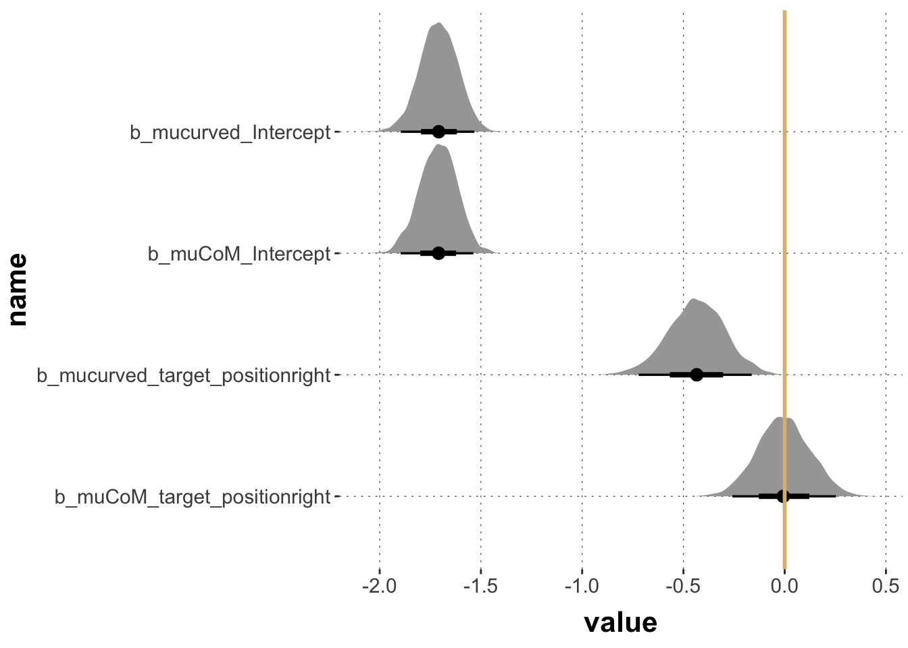

Here is code to load (and if necessary, install) required packages, and to set some global options (for plotting and efficient fitting of Bayesian models).
Toggle code
# install packages from CRAN (unless installed)pckgs_needed <-c("tidyverse","brms","rstan","rstanarm","remotes","tidybayes","bridgesampling","shinystan","mgcv")pckgs_installed <-installed.packages()[,"Package"]pckgs_2_install <- pckgs_needed[!(pckgs_needed %in% pckgs_installed)]if(length(pckgs_2_install)) {install.packages(pckgs_2_install)} # install additional packages from GitHub (unless installed)if (!"aida"%in% pckgs_installed) { remotes::install_github("michael-franke/aida-package")}if (!"faintr"%in% pckgs_installed) { remotes::install_github("michael-franke/faintr")}if (!"cspplot"%in% pckgs_installed) { remotes::install_github("CogSciPrag/cspplot")}# load the required packagesx <-lapply(pckgs_needed, library, character.only =TRUE)library(aida)library(faintr)library(cspplot)# these options help Stan run fasteroptions(mc.cores = parallel::detectCores())# use the CSP-theme for plottingtheme_set(theme_csp())# global color scheme from CSPproject_colors = cspplot::list_colors() |>pull(hex)# names(project_colors) <- cspplot::list_colors() |> pull(name)# setting theme colors globallyscale_colour_discrete <-function(...) {scale_colour_manual(..., values = project_colors)}scale_fill_discrete <-function(...) {scale_fill_manual(..., values = project_colors)}
Toggle code
data_MT <- aida::data_MT
This tutorial covers common types of generalized linear regression models (GLMs):
logistic regression
multinomial regression
ordinal regression
Poisson regression
The shared form of all of these GLMs is the following “feed-forward computation” (here illustrated for a single datum of the predicted variable \(y\) for a vector \(x\) of predictor variables and a vector of coefficients \(\beta\):
compute a linear predictor: \(\eta = \mathbf{x} \cdot \beta\);
compute a predictor of central tendency using an appropriate link function \(\text{LF}\): \(\xi = \text{LF}(\eta ; \theta_{\text{LF}})\);
determine the likelihood function\(\text{LH}\): \(y \sim \text{LH}(\xi; \theta_{\text{LH}})\).
Link function and likelihood function may have additional free parameters, \(\theta_{\text{LF}}\) and \(\theta_{\text{LH}}\), to be fitted alongside the regression coefficients.
Simple linear regression is the special case of this scheme where the link function is just the identity function and the likelihood is given by \(y \sim \mathcal{N}(\xi; \sigma)\). Different types of regression are used to account for different kinds predicted variable \(y\):
type of \(y\)
(inverse) link function
likelihood function
metric
\(\xi = \eta\)
\(y \sim \text{Normal}(\xi; \sigma)\)
binary
\(\xi = \text{logistic}(\eta)\)
\(y \sim \text{Bernoulli}(\xi)\)
nominal
\(\xi = \text{soft-max}(\eta)\)
\(y \sim \text{Categorical}({\xi})\)
ordinal
\(\xi = \text{cumulative-logit}(\eta; {\delta})\)
\(y \sim \text{Categorical}({\xi})\)
count
\(\xi = \exp(\eta)\)
\(y \sim \text{Poisson}(\xi)\)
Logistic regression
Explanation
In logistic regression, the response variable \(y\) is binary, i.e., we want to predict the probability \(p\) with which one of two possible outcomes (henceforth: the reference outcome) occurs. The likelihood function for this case is the Bernoulli distribution. This requires a link function \(LF\) that maps real-valued linear predictor values \(\eta\) onto the unit interval. A common choice is the logistic function:
The linear predictor values \(\eta\) can be interpreted directly, as the log odds-ratio of the predicted probability \(\xi\). This is because the inverse of the logistic function is the logit function, which has the following form:
This means that differences between linear predictor parameters can be interpreted directly as something like the “evidence ratio” or “Bayes factor”. It is the log of the factor by which to transform log odds-ratios (e.g., changing beliefs from \(\xi_1\) to \(\xi_2\):
For the purposes of understanding which priors are weakly or strongly informative, a unit difference in the linear predictor can be interpreted as a log Bayes factor (changing prior odds to posterior odds). So a unit difference in the predictor value corresponds to a Bayes factor of around 2.72.
Example
Consider the mouse-tracking data again. Our hypothesis is that typical examples are easier to classify, so they should have higher accuracy than atypical ones. We are also interested in additional effects of group on accuracy.
sum_stats |>ggplot(aes(x = condition, y = accuracy, group = group, color = group)) +geom_line(size =1, position =position_dodge(0.2)) +geom_point(size =3, position =position_dodge(0.2)) +geom_errorbar(aes(ymin = ci_lower, ymax = ci_upper), width =0.1, size =0.35, position =position_dodge(0.2))
Visually, there might be a hint that typical trials had higher accuracy, but we cannot judge with the naked eye whether this is substantial.
A logistic regression, regressing correct against group * condition, may tell us more. To run the logistic regression, we must tell the brms that we want to treat 0 and 1 as categories. To be sure, and also to directly dictate which of the two categories is the reference level, we use a factor (of strings) with explicit ordering.
Based on these results, we may conclude that, given the model and the data, we should believe that typical examples had higher accuracy.
Exercise 1a
Test whether there is reason to believe, given model and data, that the touch group was more accurate than the click group. (After all, the click group could change their minds until the very last moment.)
Solution
Toggle code
compare_groups( fit_logistic,higher = group =="click",lower = group =="touch")
Outcome of comparing groups:
* higher: group == "click"
* lower: group == "touch"
Mean 'higher - lower': 0.06632
95% HDI: [ -0.2605 ; 0.4302 ]
P('higher - lower' > 0): 0.6488
Posterior odds: 1.847
There is no reason to believe (given model and data) that this conjecture is true.
Exercise 1b
If you look back at the plot of accuracy, it looks as if the change from atypical to typical condition does not have the same effect, at least not at the same level of strength, for the click and the touch group, i.e., it seems that there is an interaction between these two variables (group and condition). Use the function brms::hypothesis() to examine the interaction term of the model fit. What do you conclude from this?
Hypothesis Tests for class b:
Hypothesis Estimate Est.Error CI.Lower CI.Upper Evid.Ratio
1 (grouptouch:condi... < 0 -0.88 0.37 -1.5 -0.28 120.21
Post.Prob Star
1 0.99 *
---
'CI': 90%-CI for one-sided and 95%-CI for two-sided hypotheses.
'*': For one-sided hypotheses, the posterior probability exceeds 95%;
for two-sided hypotheses, the value tested against lies outside the 95%-CI.
Posterior probabilities of point hypotheses assume equal prior probabilities.
Given model and data, it is very plausible to believe that there is an interaction between these two variables.
Multinomial regression
Explanation
In multinomial regression the predicted variable is categorical with more than two levels: \(c_1, \dots, c_k\), \(k > 2\). We want to predict probabilities for each category \(p_1, \dots, p_k\) (with some linear predictors, more on this in a moment). To obtain the probabilities, we estimate a set of weights (so-called logits): \(s_1, \dots, s_k\). By default, we set \(s_1 = 0\), because we only need \(k-1\) numbers to define a \(k\)-place probability vector (given that it must sum to one). For all \(1 \le j \le k\), we define the probability \(p_i\) of category \(i\) via the following (so-called soft-max operation):
This entails that for every \(1 < j \le k\), the score \(s_j\) can be interpreted as the log-odds of category \(c_j\) over the reference category \(c_1\):
\[
s_j = \log \frac{p_j}{p_1}
\]
Finally, we do not just estimate any-old vector of logits, but we assume that each logit \(s_j\) (\(1 < j \le k\)) is estimated as a linear predictor (based on the usual linear regression predictor coefficients, appropriate to the type of the \(l\) explanatory variables):
\[
s_j = \mathbf{x} \cdot \beta^j
\]
Two things are important for interpreting the outcome of a multinomial regression fit:
each category (beyond the reference category) receives its own (independent) set of regression coefficients;
the linear predictor predictor \(s_j\) for category \(c_j\) can be interpreted as the log-odds of the \(j\)-th category over the first, reference category.
Example
Our next research question is slightly diffuse: we want to explore whether the distribution of trajectory types is affected by whether the correct target was on the right or the left. We only consider three types of categories (curved, straight and ‘change of mind’) and prepare the data to also give us the information whether the ‘correct’ target was left or right.
# A tibble: 2,052 × 2
prototype_label target_position
<fct> <chr>
1 straight left
2 straight right
3 curved right
4 curved left
5 CoM left
6 CoM right
7 CoM right
8 straight left
9 straight left
10 straight left
# ℹ 2,042 more rows
The counts and proportions we care about are these:
Toggle code
sum_stats <- data_MT_prepped |>count(target_position, prototype_label) |>group_by(target_position) |>mutate(proportion = n /sum(n))sum_stats
# A tibble: 6 × 4
# Groups: target_position [2]
target_position prototype_label n proportion
<chr> <fct> <int> <dbl>
1 left straight 751 0.734
2 left curved 136 0.133
3 left CoM 136 0.133
4 right straight 793 0.771
5 right curved 93 0.0904
6 right CoM 143 0.139
And here is a plot that might be useful to address your current issue:
Toggle code
sum_stats |>ggplot(aes(x = prototype_label, y = proportion, fill = prototype_label)) +geom_col() +facet_grid(. ~ target_position)
It is hard to say from visual inspection alone, whether there are any noteworthy differences. We might consider the following:
Conjecture: the difference in probability between straight vs curved is higher when the target is on the right than when it is on the left.
This is not a real “research hypothesis” but a conjecture about the data. Let’s still run a multinomial regression model to test address this conjecture.
Family: categorical
Links: mucurved = logit; muCoM = logit
Formula: prototype_label ~ target_position
Data: data_MT_prepped (Number of observations: 2052)
Draws: 4 chains, each with iter = 2000; warmup = 1000; thin = 1;
total post-warmup draws = 4000
Population-Level Effects:
Estimate Est.Error l-95% CI u-95% CI Rhat
mucurved_Intercept -1.71 0.09 -1.90 -1.53 1.00
muCoM_Intercept -1.71 0.09 -1.90 -1.54 1.00
mucurved_target_positionright -0.44 0.14 -0.72 -0.16 1.00
muCoM_target_positionright -0.00 0.13 -0.26 0.25 1.00
Bulk_ESS Tail_ESS
mucurved_Intercept 4922 3008
muCoM_Intercept 4336 2999
mucurved_target_positionright 4091 3222
muCoM_target_positionright 4280 2947
Draws were sampled using sampling(NUTS). For each parameter, Bulk_ESS
and Tail_ESS are effective sample size measures, and Rhat is the potential
scale reduction factor on split chains (at convergence, Rhat = 1).
For better visibility here is a plot of the posteriors over relevant model parameters.
Toggle code
# there MUST be a nicer way of doing this, but ...ordered_names <-c("b_mucurved_Intercept", "b_muCoM_Intercept","b_mucurved_target_positionright","b_muCoM_target_positionright")fit_multinom |> tidybayes::tidy_draws() |>pivot_longer(cols =starts_with("b_")) |>select(name, value) |>mutate(name =factor(name, levels =rev(ordered_names))) |>ggplot(aes(x = value, y = name)) + tidybayes::stat_halfeye() +geom_vline(aes(xintercept =0), color = project_colors[3], alpha=1, size =1)

Exercise 2a
Look at the names of the coefficients in the fit summary to find out:What is the reference level for the categorical predictor variable?
Solution
It’s the ‘left’ position, because there is a coefficient for the ‘right’ position.
Exercise 2b
Look at the names of the coefficients in the fit summary to find out: What is the reference level of the categories to be predicted in the multinomial model?
Solution
The reference category is ‘straight’ because we have regression coeffiecient for all but the ‘straight’ category.
Exercise 2c
Can you extract information about our conjecture from this plot (or the summary of the model fit)?
Solution
Yes! Our conjecture is about the difference in probability of the ‘straight’ vs he ‘curved’ category. This difference is directly encoded in regression coefficients. Concretely, the coefficient ‘mucurved_Intercept’ gives us the log odds of the ‘straight’ vs’ the ‘curved’ category for the ‘left’-position cases. The difference of log odds for the ‘right’-position cases is simply the coefficient ‘mucurved_target_positionright’. The is credibly smaller than zero (by a margin), so we may conclude that model and data provide support for our conjecture.
Exercise 2d
Use the posterior means of the regression coefficients to compute the corresponding scores \(s_i\) and class probabilities \(c_i\). Compare these to the observed frequencies.
# A tibble: 6 × 5
target_position prototype_label n proportion prediction
<chr> <fct> <int> <dbl> <dbl>
1 left straight 751 0.734 0.734
2 left curved 136 0.133 0.133
3 left CoM 136 0.133 0.133
4 right straight 793 0.771 0.771
5 right curved 93 0.0904 0.0903
6 right CoM 143 0.139 0.139
Ordinal regression
Explanation
When \(k>2\) categories have a natural ordering, the problem of predicting probabilities for each category can be simplified by taking this ordering into account. A common choice of link function for this case is the cumulative logit function which takes the linear predictor and a vector \(\delta\) of \(k-1\) thresholds as arguments to return a probability vector, here denoted as \(\mathbf{p}\), whose components are defined like so:
To see what is going on, consider the a case with three categories. Fix the two threshold \(\delta_1=-0.75\) and \(\delta_2=1.6\) just for illustration. Now assume that we have a case there the linear predictor value \(p\) is zero. The cumulative logit function above then entails the category probabilities as shown in this plot, as the length of the colored bar segments:
If the linear predictor \(\xi\) is estimated to be bigger than zero, this intuitively means that we shift all of the threshold to the left (by the same amount). For example, the plot below shows the case of \(\xi=1\) where the probability of the first category decreases while that of the third increases.
In sum, the cumulative-logit model for ordinal regression, is defined as follows:
The kind of mouse-trajectories, as categorized in variable prototype_label, are plausibly ordered by the “amount of deviation”. The following therefore tries to predict the ordered category prototype_label from the numerical measure MAD. Here is a plot of how this would look like:
Toggle code
# prepare data by making 'prototype_label' an ordered factordata_MT_prepped2 <- data_MT_prepped |>mutate(prototype_label =factor(prototype_label, ordered = T))# plotting the ordered categories as a function of MADdata_MT_prepped2 |>ggplot(aes(x = MAD, y = prototype_label, color = prototype_label)) +geom_jitter(alpha =0.3,height =0.3, width =0)
To run an ordinal regression model, we specify family = cumulative(). This runs the default cumulative-logit model introduced at the beginning of the session.
The summary output for this fitted model gives information about the slope of the predictor variable MAD as usual. But it also supplies information about two (!) intercepts: these are the cutoff points for the different categories in the cumulative link function.
Toggle code
summary(fit_ordinal)
Family: cumulative
Links: mu = logit; disc = identity
Formula: prototype_label ~ MAD
Data: data_MT_prepped2 (Number of observations: 2052)
Draws: 4 chains, each with iter = 2000; warmup = 1000; thin = 1;
total post-warmup draws = 4000
Population-Level Effects:
Estimate Est.Error l-95% CI u-95% CI Rhat Bulk_ESS Tail_ESS
Intercept[1] 4.04 0.18 3.70 4.40 1.00 2231 2447
Intercept[2] 9.50 0.53 8.50 10.62 1.00 1584 1841
MAD 0.02 0.00 0.02 0.03 1.00 1910 2200
Family Specific Parameters:
Estimate Est.Error l-95% CI u-95% CI Rhat Bulk_ESS Tail_ESS
disc 1.00 0.00 1.00 1.00 NA NA NA
Draws were sampled using sampling(NUTS). For each parameter, Bulk_ESS
and Tail_ESS are effective sample size measures, and Rhat is the potential
scale reduction factor on split chains (at convergence, Rhat = 1).
We can operate with the linear regression coefficients as usual, e.g., asking whether there is any reason to believe, given model and data, that the higher MAD, the higher the probability of seeing a more ‘uncertain’ trajectory type.
Hypothesis Tests for class b:
Hypothesis Estimate Est.Error CI.Lower CI.Upper Evid.Ratio Post.Prob Star
1 (MAD) > 0 0.02 0 0.02 0.03 Inf 1 *
---
'CI': 90%-CI for one-sided and 95%-CI for two-sided hypotheses.
'*': For one-sided hypotheses, the posterior probability exceeds 95%;
for two-sided hypotheses, the value tested against lies outside the 95%-CI.
Posterior probabilities of point hypotheses assume equal prior probabilities.